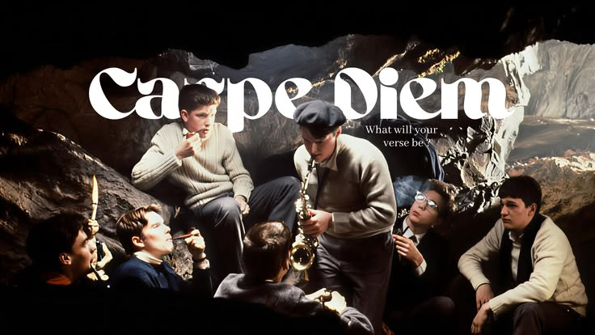

Sociedade dos Poetas Mortos (1989)
Um filme feito por Tom Schulman

Gênero
- Comédia
- Drama
- Tragicomédia
- Amadurecimento
- Melodrama
- Adolescente
Sinopse
"Sociedade dos Poetas Mortos" (1989) acompanha um professor de inglês não convencional, John Keating (Robin Williams), que inspira alunos em uma rígida academia preparatória em 1959 a desafiar tradições, pensar por si mesmos e "aproveitar o dia" (Carpe Diem) através da poesia. Os alunos revivem uma sociedade secreta, gerando conflitos com as expectativas fami- liares e escolares.

Elenco
Curiosidades
- Baseado em fatos reais: O roteirista Tom Schulman baseou a história em suas experiências escolares e o personagem John Keating foi inspirado em dois de seus ex-professores.
- Filmagem cronológica: O diretor Peter Weir filmou na ordem cronológica para capturar a evolução natural do relacionamento entre o professor Keating (Robin Williams) e os alunos.
- Robin Williams sério: Diferente de seus papéis cômicos, Williams manteve um tom mais sério e focado durante as gravações, pois estava passando por um divórcio na época.
- Cena da neve: A cena icônica em que Todd Anderson (Ethan Hawke) chora na neve foi filmada de uma só vez. A cena era para ser interna, mas o diretor mudou para o ar livre devido à neve repentina.
- Interação no set: Os jovens atores viviam juntos no mesmo quarto para fortalecer os laços de amizade e camaradagem vistos no filme.
- Inspiração: John Keating foi inspirado no professor Samuel Pickering, que foi professor do roteirista Tom Schulman.
- Locação Real: O filme foi inteiramente gravado em uma escola privada em St. Andrews, em Delaware, EUA.

O Me! O Life! By Walt Whitman
Oh me! Oh life! of the questions of these recurring, Of the endless trains of the faithless, of cities fill’d with the foolish, Of myself forever reproaching myself, (for who more foolish than I, and who more faithless?) Of eyes that vainly crave the light, of the objects mean, of the struggle ever renew’d, Of the poor results of all, of the plodding and sordid crowds I see around me, Of the empty and useless years of the rest, with the rest me intertwined, The question, O me! so sad, recurring—What good amid these, O me, O life? Answer. That you are here—that life exists and identity, That the powerful play goes on, and you may contribute a verse.